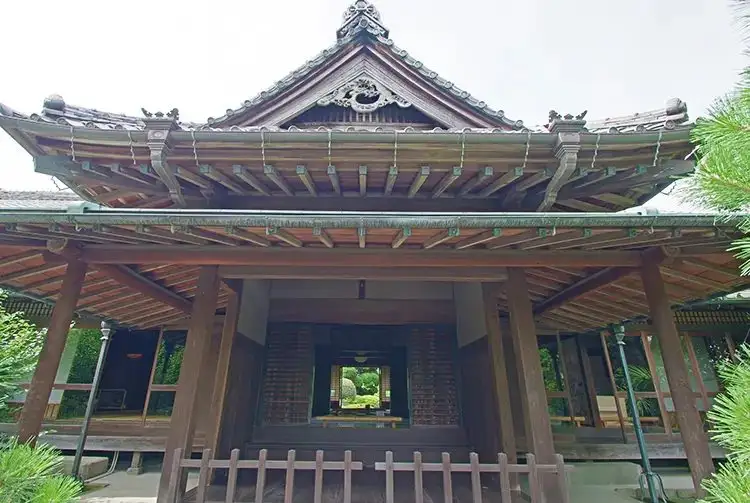

Hino, Tokyo: things to do, food and stays
Hino · Tokyo
Hino
Highlighted on the Tokyo map.

Sights
Dining
Medika Soba Kingyo
メヂカそば 吟魚

Noodle restaurant in Hino, Tokyo.
Patisserie du Chef FUJIU
フジウ

Cafe in Hino, Tokyo.
Koemon
こえもん

Noodle restaurant in Hino, Tokyo.
Shikisai Dining Haru Reservation
四季彩ダイニング 春

Izakaya or bar in Hino, Tokyo.
Unagi Fujita Tokyo ten
うなぎ藤田 東京店

Seafood restaurant in Hino, Tokyo.
Hirosaki Ken
弘前軒

Noodle restaurant in Hino, Tokyo.
ANAS DOSA BIRYANI
アナス ドーサ ビリヤニ

Chinese or Asian restaurant in Hino, Tokyo.
Aruteijano Jierateria
アルティジャーノ・ジェラテリア

Sweets and bakery shop in Hino, Tokyo.
Yonpachi Ten-don
四八天丼

Seafood restaurant in Hino, Tokyo.
Asahi Ken
あさひ軒

Noodle restaurant in Hino, Tokyo.
Ishigama Pan Kobo Aigran Izumizuka ten
石窯パン工房 アイグラン 泉塚店

Cafe in Hino, Tokyo.
Yakiniku Saien Morambon Reservation
焼肉彩苑 モランボン

Meat restaurant in Hino, Tokyo.
Men Dining Bishamonten
麺･DINING 毘沙門天

Noodle restaurant in Hino, Tokyo.
Minmin
珉珉

Noodle restaurant in Hino, Tokyo.
Matoi
まとい

Noodle restaurant in Hino, Tokyo.
Chuka Soba Senmon Ten Binbin Tei Takahata fudou ten
中華そば専門店 びんびん亭 高幡不動店

Noodle restaurant in Hino, Tokyo.
Hino Zushi
日野寿司

Seafood restaurant in Hino, Tokyo.
Ramen Gyoza Haru Raion mogusa ten
らーめんぎょうざ 治 らいおん百草店

Noodle restaurant in Hino, Tokyo.
COWBOY
カウボーイ

Meat restaurant in Hino, Tokyo.
Masala Times

Japanese restaurant in Hino, Tokyo.
RIVER

Meat restaurant in Hino, Tokyo.
Fuji Shokudo
ふじ食堂

Japanese restaurant in Hino, Tokyo.
Soba Dokoro Kaiun Soba
そば処 開運そば

Noodle restaurant in Hino, Tokyo.
Ramen Tsukemen Binbin Tei Hino ten
らーめんつけ麺 びんびん亭 日野店

Noodle restaurant in Hino, Tokyo.
Oinari Shokudo
おいなり食堂

Seafood restaurant in Hino, Tokyo.
Osoba Tamagawa
おそば 玉川

Noodle restaurant in Hino, Tokyo.
104KITCHEN

Meat restaurant in Hino, Tokyo.
Ramen Bunji
らーめんぶん治

Noodle restaurant in Hino, Tokyo.
Bakery Praat
ベーカリー プラート

Sweets and bakery shop in Hino, Tokyo.
Biton Takahata fudou ten
美豚 高幡不動店

Noodle restaurant in Hino, Tokyo.
Takahata Soba Takahata fudou ten
高幡そば 高幡不動店

Noodle restaurant in Hino, Tokyo.
Tonchin Ken
とんちん軒

Noodle restaurant in Hino, Tokyo.
Dontaku
どんたく

Noodle restaurant in Hino, Tokyo.
Muraoka
手打蕎麦むら岡

Noodle restaurant in Hino, Tokyo.
green oasis cafe 042
グリーンオアシスカフェ ゼロヨンニー

Cafe in Hino, Tokyo.
Motsuni Shokudo Motsuhino
もつ煮食堂 もつひの

Japanese restaurant in Hino, Tokyo.